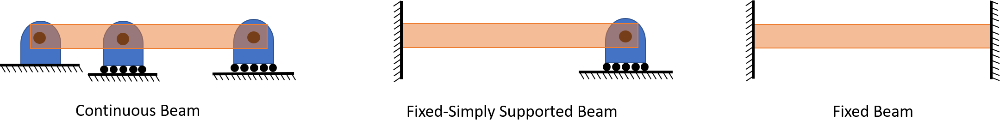

| Bending Analysis |
| Boundary Conditions |
| Loadings |
| Sign Conventions |
| Pure Bending |
| Stress-Strain Variations |
| Material Behavior |
| Second Moment of Area |
| Maximum Normal Stress |
| Eccentric Axial Loading |
Beams in Bending
Bending Analysis
This wood ruler is held flat against the table at the left, and fingers are poised to press against it. When the fingers apply forces, the ruler deflects, primarily up or down. Whenever a part deforms in this way, we say that it acts like a “beam.” In this chapter, we learn to determine the stresses produced by the forces and how they depend on the beam cross-section, length, and material properties.

Boundary Conditions
Statically Determinate Beams:

Statically Indeterminate Beams:

Loadings

Sign Conventions
Internal
External

More in depth explanation of sign convention can be found here
Pure Bending
Take a flexible strip, such as a thin ruler, and apply equal forces with your fingers as shown. Each hand applies a couple or moment (equal and opposite forces a distance apart). The couples of the two hands must be equal and opposite. Between the thumbs, the strip has deformed into a circular arc. For the loading shown here, just as the deformation is uniform, so the internal bending moment is uniform, equal to the moment applied by each hand.

Front-to-back symmetry All faces of “grid elements” remain at right angles to each other, hence
\[\gamma_{xy} = \gamma_{xz} = 0\]
Therefore: \[\tau_{xy} = \tau_{xz} = 0\]
Also, traction free boundary conditions yields… \[\sigma_y = \sigma_z = \tau_{yz} = 0\]
Thus, at any point of a slender member in pure bending, we have a state of uniaxial stress, since is the only non-zero stress component
For positive moment, M > 0

Hence there must exist a surface parallel to the upper and lower where
This surface is called NEUTRAL SURFACE

Stress-Strain Variations

Material behavior: stresses in linearly elastic beams
Elastic range: bending moment is such that the normal stresses remain below the yield strength. Hooke’s law combined with equilibrium gives:
\[\int_A y dA =0\] Defines longitudinal and netural axes
\[M(x) = \frac{E(x)I_z(x)}{\rho(x)}\] Moment-curvature equation
First Moment of Area: centroid of an area
The first moment of the area A with respect to the z-axis is given by $Q_z = \int_A y dA$
The first moment of the area A with respect to the y-axis is given by $Q_y = \int_A z dA$
The centroid of the area A is defined as the point C, with y- and z-coordinates,

In the case of a composite area, we divide the total area Atot into parts

Second Moment or Area Moment of Inertia
The moment of inertia of the area A with respect to the z-axis is given by $I_z = \int_A y^2 dA$
The moment of inertia of the area A with respect to the y-axis is given by $I_y = \int_A z^2 dA$
Note: polar moment of inertia in this plane \[J = \int_A \rho^2 dA = \int_A (y^2 + z^2)dA = I_y + I_z\]

Parallel-axis theorem: the moment of inertia about an axis through C’ parallel to the axis through the centroid C is related to $I_C$ by
Maximum Normal Stress
From equilirbium: the centroid is located at $\bar{y}=0$, i.e., the neutral axis passes through the centroid of the section
\[\int_A y dA = 0\]
Elastic Flexural Formula
\[\sigma_x(x,y) = -\frac{M(x)y}{I_z(x)}\]
To evaluate the maximum absolute normal stress, denoting “c” the largest distance from the neutral surface, we use:
\[\sigma_{max} = \frac{|M|c}{I_z}\]
Note that the ratio I/c depends only upon the geometry of the cross section. This ratio is called the ELASTIC SECTION MODULUS and is denoted by S:
\[\sigma_{max} = \frac{|M|}{S}\]
Where \[S = \frac{I}{c}\]

Bending of composite beams
Recall that $\epsilon_x = -\frac{y}{\rho}$ does not depend on the material properties of the beam, and is based only on the assumptions of geometry done so far.

In non-homogeneous beams, we can no longer assume that the neutral axis passes through the centroid of the composite section. We should now determine that location…
After obtaining the TRANSFORMED CROSS SECTION, we get
\[\int_{A_t}y d A_t = 0\]
Therefore, the neutral axis passes through the centroid of the transformed cross section
Note that the widening ($n > 1$) or narrowing ($n < 1$) must be done in a direction parallel to the neutral axis of the section, since we want y-distances to be the same in the original and transformed section, so that the distance y in the flexural formula is unaltered.
\[\sigma_1 = -\frac{My}{I_t}\]
\[\sigma_2 = -\frac{nMy}{I_t}\]
Eccentric axial loading in a plane of symmetry
Equilibrium gives: \[F=P \ \ \text{and} \ \ M=Pd\]

Stress due to eccentric loading found by superposing the uniform stress due to a centric load and linear stress distribution due to a pure bending moment

Validity requires stresses below proportional limit (elastic region), deformations have negligible effect on geometry, and stresses not evaluated near points of load application.